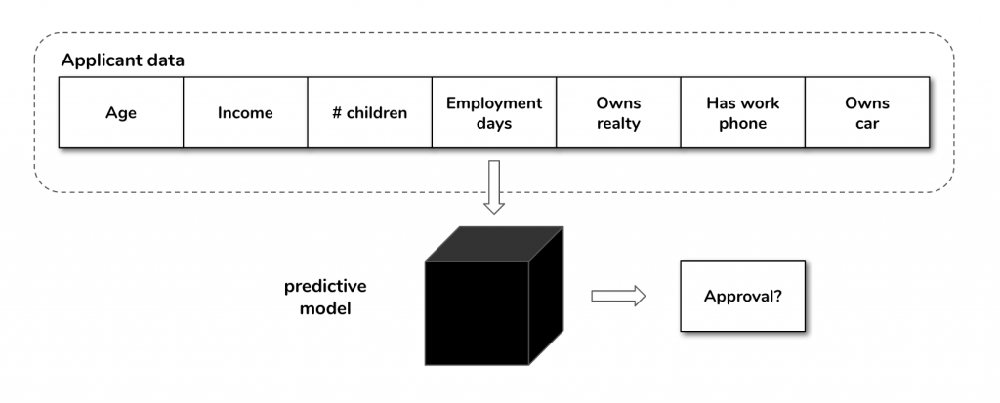
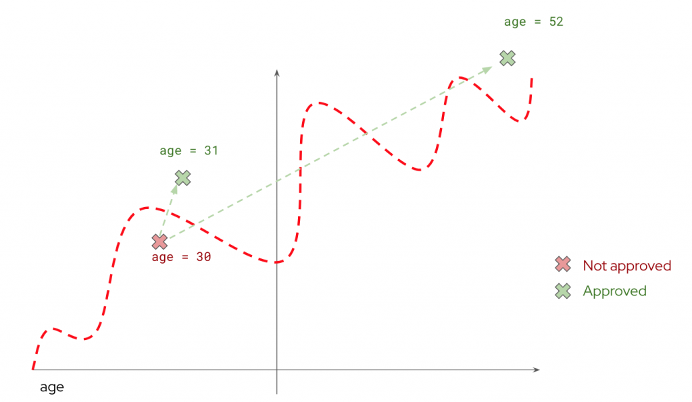

Finding counterfactuals with OptaPlanner
Modern enterprises are increasingly integrated with Machine Learning (ML) algorithms in their business workflows as a means of leveraging existing data, optimising decision making processes, detecting anomalies or simply reducing repetitive tasks.
One of the challenges with ML methods, especially with internally complex predictive models, is being able to provide non-technical explanations on why a certain prediction was made. This is vital, be it for regulatory purposes, increasing customer satisfaction or internal auditing. In this post we will focus on a particular kind of AI/ML explanation method commonly called a “counterfactual” and how it can easily be accomplished with OptaPlanner, an open-source constraint solver.
What are counterfactuals?
With Machine Learning methods taking an ever more prominent role in today’s life, there is a growing need to be able to justify and explain their outcomes. An entire field of research, Explainable AI (XAI) is dedicated to finding the best methods to quantify and qualify the ML predictions which might have an impact in our daily lives.
Such a method is the counterfactual explanation.
The goal of counterfactual explanations is to provide human-friendly examples of scenarios which have the desired outcome. As with many of these XAI methods, their power resides in the fact they are accessible to non-technical users, and in fact, if we do not look at the strong mathematical justifications behind the scenes, for simple models they might even seem like common sense.
Let’s look at an example of a counterfactual, by presenting a use case which we will use for the remainder of this post: credit card loan applications.
Let’s assume a simple system where a person can apply for a credit card by providing some personal information such as age, annual income, number of children, if they are a home-owner, number of days employed and whether they have a work phone or car. We will call this information the inputs.
This data will then be fed to a predictive model which will simply give an “approved” or “rejected” answer to the application (we will call this the outcome).

If an application is rejected, the applicant might be interested in knowing how they can improve their situation in order to have a successful application. Additionally, auditors of the process might want to understand what went wrong with that application. The problem is that many of the predictive models we encounter in the real-world might be too complex to interpret for non-technical stakeholders and they might be a “black box” model, that is a model where the same stakeholders do not have access to the predictive model working internals.
Counterfactual explanations work by providing a simple answer to the previous question. We chose an outcome (in this case an application approval) and this method provides the set of inputs such that “if your data was this, the application would have been approved.”. This is a very general overview of a counterfactual and we will provide some additional requirements to this method as well as a working example using an open-source constraint solver, OptaPlanner.
How to find counterfactuals?
To find a counterfactual we are not interested in any set of inputs that provides the desired outcome. We want to find the closest set of inputs to the original ones which provide this outcome.
Let’s assume, for the sake of an example, that our credit card approval model only took a single variable as its input: a person’s age.
A way of finding the counterfactual would be to start with the applicant’s age and search around for values for which the model gives an approval. Although possible, this type of brute-force optimisation is definitely not recommended. As any useful model will probably have a considerable amount of input variables, the brute-force search becomes unfeasible.

However, we might have domain-specific constraints that we want to impose on our counterfactuals.
As an example, let’s again consider the age variable and assume we found a solution which states if the applicant was 10 years younger, they could have the credit card. Although mathematically correct, the answer is not very helpful. It is not acceptable to provide such answers and as such we might want to impose constraints to the search, such as:
- The age must be unchanged
- The number of children must be unchanged
In this situation, we are searching for the best solution to a question (“what is the counterfactual?”), according to some score and over a finite search domain, in such a way that a number of constraints must be satisfied. This is, in essence, the definition of a Constraint Satisfaction Problem (CSP).
Since we have defined our problem as a CSP, we will not try to “reinvent the wheel” and implement our own solution. We will use already existing best-of-breed tools to achieve this, specifically OptaPlanner.
OptaPlanner is an open-source, battle-tested, flexible constraint solver which allows finding CSP solutions of any degree of complexity. Scores, solutions and logic can be expressed in most JVM supported languages. It also supports a variety of search algorithms and meta-heuristics as well as tools to help you research and test the best approaches, such as built-in benchmark reports. Using OptaPlanner as the counterfactual search engine in our example was very straight-forward.
It is important to note that for the example we are using we are treating the predictive model as a “black box”. That is, OptaPlanner will not need to know the internal workings of the predictive model. It only needs to communicate with it via an API, sending inputs and getting a prediction in return. This is important because, with this assumption, the counterfactual search can be completely decoupled from the type of model used, we could use any type of model from regressions to neural networks, that the principles outlined here (and the implementation) would work in the same way.
How to calculate counterfactuals with OptaPlanner
In order to use OptaPlanner to find counterfactuals we need to define our problem and consequently express at least the following in OptaPlanner’s terms:
- A planning entity
- A planning solution
- A way to score our solution
Our planning entity will be a CreditCardApproval class which will simply encapsulate the application information we mentioned previously.
The scoring of what constitutes the “best” counterfactual was implemented as a BendableScore with the following levels:
- A “primary”
HardScorewhich penalises if the outcome is different from the desired
This is our main predictive goal. For instance, if we are looking for approvals, a prediction of rejection will penalise this component - A “secondary”
HardScorewhich penalises if any of the constrained variables is changed
We want to penalise solutions which have to change the constrained fields, such as age or number of children. - A
SoftScorewhich is the distance from the input variables to the original variables.
This distance was calculated using a Manhattan distance, but other distance metrics can be used.
We could have excluded solutions which break our constraints from the search space, however, there are good reasons to include them.
We might be interested in solutions which are feasible because they do provide additional information about the model. For instance, it is still informative to know that there is no possible way to approve a credit card application given the data we have, without changing the age. Although it might not be useful from a business perspective, it can be very useful to give us an insight into the model’s behaviour.
The scoring was implemented using OptaPlanner’s constraint streams API (with an example below). The constraint streams API, on top of performance advantages, also allow us to have an individual breakdown of a score, which is useful to provide additional information about how the counterfactual search was performed.
An example of a method to penalise a constrained field:
public class ApprovalContraintsProvider implements ConstraintProvider {
// ...
private Constraint changedAge(ConstraintFactory constraintFactory) {
return constraintFactory
.from(CreditCardApprovalEntity.class)
.filter(entity -> !entity.getAge().equals(Facts.input.getAge()))
.penalize(
"Changed age",
BendableBigDecimalScore.ofHard(
HARD_LEVELS_SIZE, SOFT_LEVELS_SIZE, 1, BigDecimal.valueOf(1)));
}
// ...
Another important aspect of the counterfactual calculation is to provide search boundaries. This is done in the planning solution and we achieve this by using OptaPlanner’s ValueRangeProviders and specifying the bound from domain-specific knowledge (e.g. what is the typical age or income range we expect to see from credit card applications). An important note is that we do not access the original training data. Using the original training data boundaries might even bring some problems, such as the counterfactual existing outside its range. Below are a few examples provided:
@PlanningSolution
public class Approval {
// ...
@ValueRangeProvider(id = "ageRange")
public CountableValueRange<Integer> getAgesList() {
return ValueRangeFactory.createIntValueRange(18, 100);
}
@ValueRangeProvider(id = "incomeRange")
public CountableValueRange<Integer> getIncomeList() {
return ValueRangeFactory.createIntValueRange(0, 1000000);
}
@ValueRangeProvider(id = "daysEmployedRange")
public CountableValueRange<Integer> getDayEmployedList() {
return ValueRangeFactory.createIntValueRange(0, 18250);
}
@ValueRangeProvider(id = "ownRealtyRange")
public CountableValueRange<Boolean> getOwnRealtyList() {
return ValueRangeFactory.createBooleanValueRange();
}
// ...
}
Once we implement our entity, score calculation and solution for a counterfactual, as an OptaPlanner problem, we are ready to test it.
The predictive model to be used was trained in Python using the scikit-learn library on a dataset containing simulated data for the variables mentioned previously. The model type chosen was a random forest classifier which, after training, was serialised into the PMML format.
The system was implemented as a simple REST server (built with Quarkus), with three main endpoints:
- A
/predictendpoint which simply gives the approval prediction given applicant information - A
/counterfactualendpoint which returns a counterfactual for a given input - A
/breakdownendpoint which returns a breakdown of the OptaPlanner score associated with a counterfactual
Once we have the server running, we can query it with the data from an application we know before-hand will be unsuccessful:
curl --request POST \
--url http://0.0.0.0:8080/creditcard/prediction \
--header 'content-type: application/json' \
--data ' {
"age": 20,
"income": 50000,
"children": 0,
"daysEmployed": 100,
"ownRealty": false,
"workPhone": true,
"ownCar": true
}'And the result will be similar to:
{
"APPROVED": 0,
"probability(0)": 0.7244007069725137,
"probability(1)": 0.27559929302748637
}We can see that this application was rejected with a “confidence” of around 72%.
We now want to find the counterfactual, which is, as we’ve seen, the set of inputs closest to the above that would instead give an application approval.
To do so, we send the same data, but this time to the /counterfactual endpoint:
curl --request POST \
--url http://0.0.0.0:8080/creditcard/counterfactual \
--header 'content-type: application/json' \
--data ' {
"age": 20,
"income": 50000,
"children": 0,
"daysEmployed": 100,
"ownRealty": false,
"workPhone": true,
"ownCar": true
}'The result will be similar to:
{
"score": "[0/0]hard/[-2602632256.0]soft",
"approvalsList": [
{
"age": 20,
"income": 99120,
"children": 0,
"daysEmployed": 1996,
"ownRealty": false,
"workPhone": true,
"ownCar": true
}
// ...
}First of all, we can see that the counterfactual honours the requirement of keeping the constrained fields unchanged (same age and same number of children). It tells us that:
- if the applicant earned the above amount and
- had been employed for a longer period of time,
the application would have been approved. So this is the information we needed!
We can confirm directly with the model that this hypothetical application would have been successful by sending it to the /prediction endpoint:
curl --request POST \
--url http://0.0.0.0:8080/creditcard/prediction \
--header 'content-type: application/json' \
--data ' {
"age": 20,
"income": 99120,
"children": 0,
"daysEmployed": 1996,
"ownRealty": false,
"workPhone": true,
"ownCar": true
}'With the result being:
{
"APPROVED": 1,
"probability(0)": 0.44784518470933066,
"probability(1)": 0.5521548152906692
}As expected, the application would have been successful.
All the code is available at https://github.com/kiegroup/trusty-ai-sandbox/tree/master/counterfactual-op.